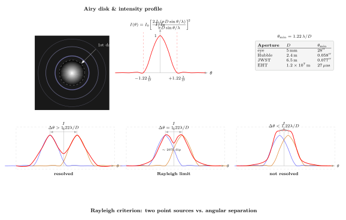

衍射极限让望远镜"看不到"什么?
上一节我们把光送过一条窄缝, 屏幕上出现了宽阔的亮带与两侧交替的暗纹. 那些纹路是同一束光"自己和自己干涉"的结果; 它告诉我们一件反直觉的事情: 只要缝有限宽, 光就回避不了发散, 哪怕入射的是完美的平面波. 现在我们把这个道理搬到望远镜上.
望远镜的物镜本质上就是一个大得多的"孔". 天空上一颗恒星, 距离远到可视作几何意义上的点源, 它发出的光抵达地球时几乎是平面波. 若把它想成几何光学里一根"细到没有厚度"的光线, 那么理想透镜应该把它聚成一个无穷小的亮点. 但真实望远镜从不这样成像 — 无论镜面多么精密, 最终在焦平面上留下的都是一团有限大小的亮斑, 周围套着几圈更暗的光环. 这个亮斑有个名字, 叫 Airy 盘, 是 1835 年英国皇家天文学家 George Biddell Airy 推算圆孔衍射时给出的.
换句话说, 哪怕我们把镜面磨到原子级光滑、把大气湍流全部消掉、把探测器换成零噪声的理想器件, 还有一个门槛挡在所有人面前: 光的波动性本身. 它给"分辨率"这个指标装上了一块天花板. 这块天花板是什么? 怎么算出来? 推多远才能到顶? 这正是本节要回答的.
一、从单缝到圆孔: Airy 盘是怎么来的
上一节里, 单缝衍射的强度分布我们写成了 $I(\theta) = I_0\,\mathrm{sinc}^2(\pi a \sin\theta/\lambda)$, 第一暗纹出现在 $\sin\theta = \lambda/a$. 这是一维的情况 — 缝只在一个方向上受限. 现在我们把光阑换成直径为 $D$ 的圆孔, 光要在两个正交方向上同时受限, 推导的核心思路不变: 圆孔上每个面元发出一个次级波, 在远场叠加; 但叠加求和的几何从一维积分变成了二维的柱对称积分.
这一积分的解析解不是 $\mathrm{sinc}$ 函数, 而是第一类一阶 Bessel 函数 $J_1$. 严格写出来, 焦平面上距中心角度 $\theta$ 处的强度是
$$ I(\theta) \;=\; I_0 \left[\frac{2 J_1(x)}{x}\right]^2, \qquad x \;=\; \frac{\pi D \sin\theta}{\lambda}. \tag{1} $$
方括号里那个 $2J_1(x)/x$ 在 $x=0$ 时极限为 $1$ (这就是中央亮盘的峰值), 随后迅速下降、过零、上翘、再过零, 形成一列衰减震荡. 它每次过零, 就对应屏幕上一圈暗环; 两圈暗环之间的凸起, 就是依次变暗的亮环. 中央那块亮盘集中了全部光强的约 $83.8\%$, 第一亮环只剩 $1.75\%$, 再外一圈就只有百分之零点几了. 这就是为什么我们平常说"望远镜把点源成像为 Airy 盘", 几乎等同于说"成像为中心那一团".

$J_1(x)$ 的第一个正零点在 $x \approx 3.8317$. 把它代回 (1) 式的 $x$ 定义里:
$$ \pi D \sin\theta_1/\lambda \;=\; 3.8317 \;\;\Longrightarrow\;\; \sin\theta_1 \;\approx\; 1.2197\,\frac{\lambda}{D} \;\approx\; 1.22\,\frac{\lambda}{D}. $$
这就是著名的系数 $1.22$ 的来源. 它不是经验拟合, 不是工程取整, 而是 Bessel 函数的第一个零点除以 $\pi$ 之后的结果. 当 $\theta$ 很小的时候 $\sin\theta \approx \theta$, 这 $1.22\lambda/D$ 就直接是第一暗环的角半径, 也是后面谈"分辨率"的关键尺度.
二、瑞利判据: "刚能分得开"是什么意思
Airy 盘本身只描述一个点源成的像. 真正关心"看清楚"的场景, 是望远镜看到两个靠得很近的点源 — 比如一对双星, 或者月面上相邻的两座环形山. 两个点源各自形成一个 Airy 盘; 随着它们在天上的角距离 $\Delta\theta$ 越来越小, 两个 Airy 盘会逐渐重叠, 最终融成一块亮斑, 让我们再也分不出是一个还是两个. 那么"刚好能分得开"这件事怎么量化?
Lord Rayleigh (John William Strutt) 在 19 世纪末给出了一个操作性极强的判据: 当其中一个 Airy 盘的中心恰好落在另一个 Airy 盘的第一暗环上时, 两个点源被认为刚好可分辨. 按 (1) 式这就要求:
$$ \Delta\theta_{\min} \;=\; 1.22\,\frac{\lambda}{D}. \tag{2} $$
为什么取"第一暗环"这个特别的位置? 因为在那一点, 两个 Airy 盘的合成强度剖面中央会出现一个明显的凹陷 — 定量算一下, 凹陷深度约是峰值的 $26.5\%$. 这个幅度已经远远超过了人眼在良好照明下能察觉的亮度差异阈值 (约 $1\%$), 也远超大多数相机的动态范围噪声. 换句话说, 瑞利判据不是从物理极限里硬推出来的 (例如, 已知两个点源的强度剖面完全可信时, 你其实可以继续用拟合把更近的双峰分辨出来), 它是一条"实际观测可操作"的约定.
这条约定有一个很讨人喜欢的特点: 它把一个纷繁的光学问题压缩成一个只含 $\lambda$ 与 $D$ 的简单比值. 望远镜设计师不必关心成像系统里所有镜片的具体形状、不必关心 CCD 像元有多大, 只要把口径 $D$ 写在纸上, 把观测波段 $\lambda$ 写在它旁边, 就能立刻得出理论分辨率的数量级. 工程与物理在这里做了一次漂亮的握手.
稍微挑剔一点的读者可能会问: 除了瑞利判据, 难道就没有别的定义吗? 有的. Sparrow 判据要求合成曲线中央的凹陷刚刚消失 — 比瑞利判据更"激进", 给出的 $\Delta\theta$ 更小, 约 $0.95\lambda/D$. Dawes 判据是从望远镜观测双星实测总结出来的经验式, 给出约 $1.02\lambda/D$. 现代天文里常用 full width at half maximum (FWHM) 来描述点扩展函数的宽度, 对 Airy 盘来说 FWHM 约 $1.03\lambda/D$. 这些都接近 $\lambda/D$ 这个"自然单位", 但瑞利判据因为给出了那个干净的 $1.22$ 系数与直观的"亮环碰到暗环"图像, 成了教科书的标准.
三、把真实口径代进去: 从眼睛到 EHT
公式 (2) 最宝贵的地方是它简单到可以徒手估算. 让我们把它往不同的光学系统里塞.
人眼. 瞳孔在白天大约 $D \approx 2$–$5\,\mathrm{mm}$, 可见光中心波长 $\lambda \approx 550\,\mathrm{nm}$. 取 $D = 5\,\mathrm{mm}$:
$$ \theta_{\min}^{\text{eye}} \;=\; 1.22 \times \frac{550 \times 10^{-9}\,\mathrm{m}}{5 \times 10^{-3}\,\mathrm{m}} \;\approx\; 1.34 \times 10^{-4}\,\mathrm{rad} \;\approx\; 28''. $$
但我们的实际视力一般定在 $1'$ (60 秒) 左右, 即约 $2.9 \times 10^{-4}\,\mathrm{rad}$. 两者差了大约两倍. 这个差距并不是公式错了, 而是人眼的分辨率在衍射极限之前就被视网膜上感光细胞的间距、眼球光学的像差和神经采样给卡住了: 视网膜中心凹上每平方角分内大约有一百多个视锥细胞, 它们的间距对应的角度比衍射极限略大. 所以人类用肉眼看星空时, 是"生理极限贴着衍射极限但稍差一点"; 换句话说, 进化刚好把我们的眼睛造到了无须再改进 — 再造得更精细, 衍射极限也不允许更清晰.
哈勃空间望远镜 (Hubble). 口径 $D = 2.4\,\mathrm{m}$, 在 $\lambda = 550\,\mathrm{nm}$ 的可见光波段:
$$ \theta_{\min}^{\text{HST}} \;=\; 1.22 \times \frac{550\times 10^{-9}}{2.4} \;\approx\; 2.8 \times 10^{-7}\,\mathrm{rad} \;\approx\; 0.058''. $$
约 $0.05''$. 这个值小得令人动容 — 它意味着哈勃可以区分月球上相距 $100\,\mathrm{m}$ 的两个物体. 地面望远镜在没有自适应光学帮助的情况下做不到, 不是口径不够, 而是大气湍流把入射波前搅碎了, 典型的 "seeing" 把地面分辨率限制在 $1''$ 量级. 哈勃升空之所以是天文学的里程碑, 并不是因为它比山顶望远镜的 $D$ 更大 — 实际上它还小得多 — 而是它绕开了大气, 让衍射极限第一次真正显形.
James Webb 空间望远镜 (JWST). 口径 $D = 6.5\,\mathrm{m}$, 但它是一台红外望远镜, 观测波段主要在 $\lambda \sim 1$–$5\,\mu\mathrm{m}$. 取 $\lambda = 2\,\mu\mathrm{m}$:
$$ \theta_{\min}^{\text{JWST}} \;=\; 1.22 \times \frac{2\times 10^{-6}}{6.5} \;\approx\; 3.8 \times 10^{-7}\,\mathrm{rad} \;\approx\; 0.077''. $$
JWST 在 $2\,\mu\mathrm{m}$ 处的分辨率其实比 Hubble 在可见光的分辨率还要略粗 — 因为波长变长了 $3.6$ 倍, 而口径只大了 $2.7$ 倍. 这是衍射极限的铁律: $\theta \propto \lambda/D$, 你在波长上付一步代价, 就得在口径上多还一步. JWST 选择红外, 是因为要看宇宙早期红移到红外的星光, 以及穿透分子云的尘埃 — 它牺牲的那点角分辨率, 买来的是另一维度的物理信息.
事件视界望远镜 (EHT). 这是 VLBI (甚长基线干涉测量) 的当代巅峰. 它把分布在全球的毫米波射电望远镜信号汇合起来, 等效于一架 口径等于地球直径 的望远镜, 即 $D \sim 1.2 \times 10^7\,\mathrm{m}$. 在 $\lambda = 1.3\,\mathrm{mm}$ 的观测波段:
$$ \theta_{\min}^{\text{EHT}} \;=\; 1.22 \times \frac{1.3\times 10^{-3}}{1.2\times 10^{7}} \;\approx\; 1.3 \times 10^{-10}\,\mathrm{rad} \;\approx\; 27\,\mu\mathrm{as}. $$
大约 $20$–$30$ 微角秒. 2019 年 EHT 协作团队拍下了 M87 星系中心超大质量黑洞的剪影; 2022 年 5 月, 他们又公布了银河系中心 Sgr A* 黑洞的图像. 这两张图有一个共同的神奇之处: 它们能分辨出围绕黑洞的"亮环"厚度和中央"阴影"的尺度, 而这些尺度正好和广义相对论预测的事件视界规模相当. 从 Airy 的 1835 年到 Sgr A* 的 2022 年, 整整 187 年间, 人类就是靠着逐步放大 $D$、逐步缩小 $\theta_{\min}$, 把望远镜推到可以"看见"时空本身的弯曲处.
四、极限检验与越过天花板: $D\to\infty$, VLBI, 与突破衍射的显微术
公式 (2) 是个极其干净的反比关系. 它很善意地告诉我们: 想分辨更小的角度, 要么增大 $D$, 要么减小 $\lambda$. 两个自由度, 各有代价.
先做一个极限检验. 令 $D \to \infty$, 则 $\theta_{\min} \to 0$: 无限大的口径能给出完美清晰的像. 这和几何光学"理想透镜"的直觉相容 — 你可以把波动光学想成"几何光学 + $\lambda/D$ 量级的模糊", 当 $D$ 远远大于 $\lambda$ 时, 模糊可以忽略, 一切回到射线追迹的经典框架. 反过来令 $D \to \lambda$, 则 $\theta_{\min}$ 可以大到 $\pi$ 量级 — 此时"望远镜"其实已经没有任何成像能力, 它变成了一个单一振子, 均匀向所有方向辐射. 这也解释了为什么微波炉的门上那张带小孔的金属网能挡住 $12\,\mathrm{cm}$ 的微波 (小孔远小于 $\lambda$), 却放可见光通过 (小孔远大于 $\lambda$). 衍射极限本质上是一个无量纲数 $\lambda/D$ 的大小比较.
再令 $\lambda \to 0$, 比如用 X 射线. X 射线的 $\lambda$ 比可见光小 $1000$ 倍以上, 对应的 $\theta_{\min}$ 按 (2) 也小 $1000$ 倍, 这是原子尺度成像的理论保证. 可代价是 X 射线极难聚焦 — 一般透镜的折射率对 X 射线几乎是 $1$, 所以要用掠入射反射镜或衍射元件, 工程难度让 X 射线天文望远镜 (如 Chandra) 的实际角分辨率反倒比 Hubble 粗.
再看增大 $D$ 这条路. 地面上单一镜面的 $D$ 受限于自重变形与加工精度, 目前最大是欧洲的 Extremely Large Telescope (ELT, $D = 39\,\mathrm{m}$, 2028 年预计首光), 再大就得用自适应支撑. 但通过 干涉, 我们可以把若干台小望远镜连起来模仿大口径. 射电领域的 VLBI 就是这条路的极致: 各站只要精确记录下到达信号的时间与相位, 然后事后相关叠加, 就能合成一台等效口径等于两站距离的望远镜. EHT 做到了 $D \sim 12{,}000\,\mathrm{km}$; 正在筹划的太空 VLBI (例如朝月球方向延伸) 甚至可以把 $D$ 推到月球轨道, 从而让 $\theta_{\min}$ 再降一到两个数量级. 理论上只要地球以外还有空间让我们摆放望远镜, 这条路就没有终点.
但还有一条出人意料的路: 直接绕过衍射极限. 19 世纪末 Ernst Abbe 给显微镜写下的极限 $d \approx \lambda/(2\,n\sin\alpha)$ 和瑞利判据同源 — 它说可见光显微镜看不到小于约 $200\,\mathrm{nm}$ 的细节. 半个多世纪里这是微观世界公认的天花板. 直到 1994 年, Stefan Hell 提出 STED (受激辐射损耗) 显微术: 用一束"甜甜圈形"的光束把除中心小点之外的所有荧光分子按下去, 只让中心那个点发光, 这样有效的 "发光斑" 可以远小于 $\lambda/2$, 成像分辨率被推到 $20\,\mathrm{nm}$ 以下. 与此相配的还有结构光照明显微 (SIM)、光激活定位显微 (PALM/STORM). Hell、Betzig、Moerner 三人因此共享 2014 年诺贝尔化学奖. 他们并没有推翻瑞利判据 — 衍射极限对"线性成像"依旧成立; 但通过非线性相互作用 (荧光分子的开关) 引入新的物理自由度, 他们绕过了"线性"这个前提, 把分辨率从 $\lambda/D$ 的桎梏里解放出来.
这件事很有哲学意味. 一条物理定律给出的"极限", 往往只对它自己的假设成立. 瑞利判据假定成像是线性叠加的; 一旦你让相互作用变得非线性, "极限"就从不可逾越的天花板变成了可以绕行的路标. 光学史上类似的反转发生过不止一次 — 几何光学的"反射角等于入射角"在亚波长尺度上被超构表面打破, 傅里叶极限在单次压缩感知里被绕开. 每次我们以为看清了"不可能"的边界, 常常只是看清了原来问题的边界.
小结
本节把上一节的单缝衍射推广到圆孔, 通过 Bessel 函数得到了 Airy 盘的强度分布, 读出 $\theta_1 = 1.22\lambda/D$ 这条第一暗环公式, 再用瑞利判据把它变成分辨率的定义. 往不同的口径里一代: 人眼的 $28''$、Hubble 的 $0.05''$、JWST 的 $0.08''$、EHT 的 $20\,\mu\mathrm{as}$ — 一路从生理尺度, 走到了看见黑洞剪影的时空尺度. 在"光是什么"这个大问题上, 这一节揭示了光的波动性不只会让光纹路里出现条纹, 还会给所有成像设备烙下一块天花板: 任何有限口径、有限波长的光学系统, 都逃不过 $\lambda/D$ 这个无量纲数. 这不是工程瑕疵, 而是波动本质的几何投影. 下一节我们将挑起光波另一条被前几节搁置的自由度 — 偏振 — 看看当光的电场不再随意震荡, 它会向我们再交出哪些秘密.
▲